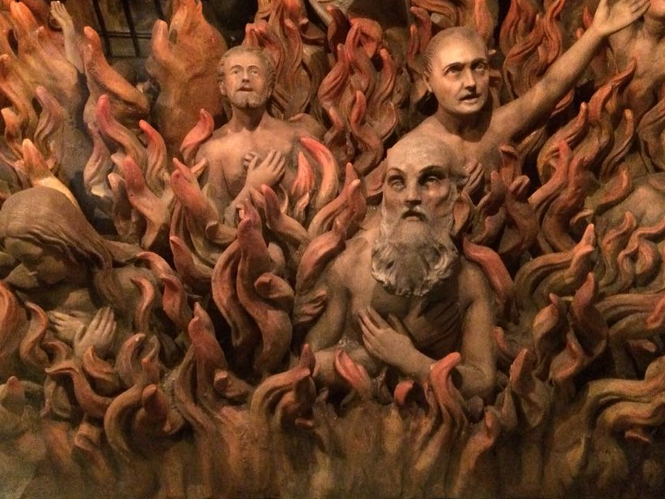
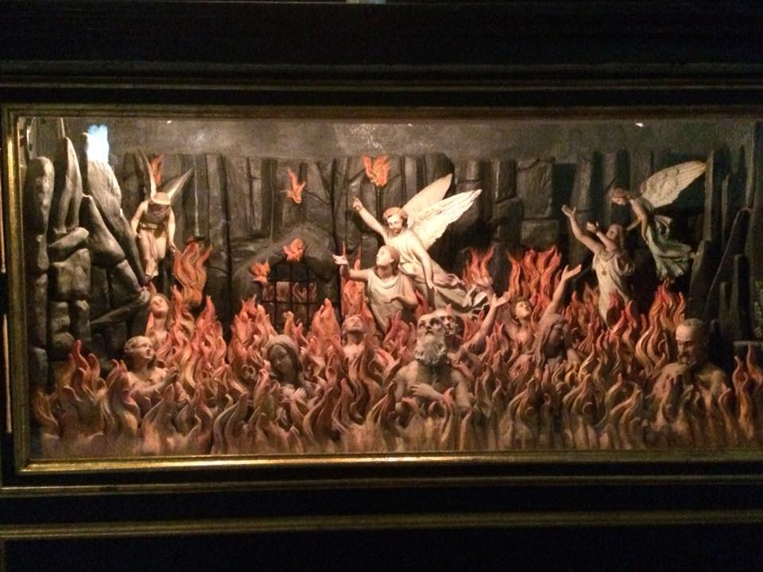
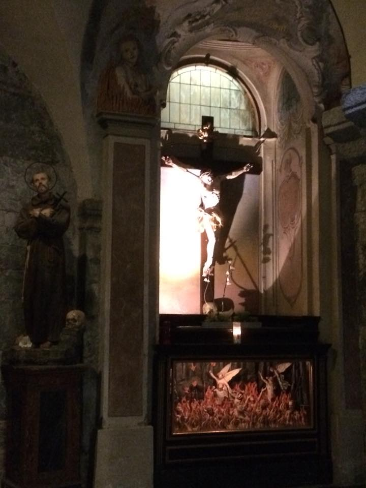

Fabulous images from the appealingly-named Altar of Suffrage at the Basilica San Fedele in Como (previously an earlier church dedicated to S. Euphemia). The images bear some relation to tableaux by the Chapman Brothers, but reports that they will be used as mascots at the 2018 World Cup in Russia are thought to be untrue.
Asparagus risotto!


